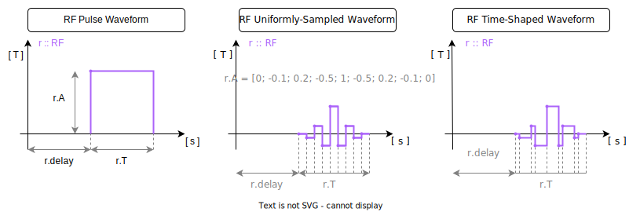

Sequence Events
As we already know, a Sequence struct contains field names that store arrays of RF, Grad, and ADC structs. In the context of MRI, we refer to RF, Grad, and ADC as "events." To create a Sequence, it's essential to understand how to create these fundamental events.
In the following subsections, we will provide detailed explanations of event parameters and guide you through the process of creating a Sequence using RF, Grad, and ADC events.
RF
The RF struct is defined in the source code of KomaMRI as follows:
mutable struct RF
A
T
Δf
delay::Real
endAs you can see, it has 4 field names: A defines amplitude, T defines duration time, delay is the distance between the 0 time and the first waveform sample and Δf is the displacement respect to the main field carrier frequency (this is for advanced users).
A and T can be numbers or vectors of numbers. Depending on the length of the A and T, KomaMRI interprets different waveforms:
- Pulse Waveform:
AandTare numbers - Uniformly-Sampled Waveform:
Ais a vector andTis a number - Time-Shaped Waveform:
AandTare both vectors;Tstores interval durations solength(A) = length(T) + 1, and the waveform is reconstructed by connecting consecutiveAentries with piecewise-linear segments
In the image below, we provide a summary of how you can define RF events:

Let's look at some basic examples of creating these RF structs and including them in a Sequence struct. The examples should be self-explanatory.
RF Pulse Waveform
julia> A, T, delay = 10e-3, 0.5e-3, 0.1e-3;
julia> rf = RF(A, T, 0, delay)
←0.1 ms→ RF(10000.0 uT, 0.5 ms, 0.0 Hz)
julia> seq = Sequence(); seq += rf
Sequence[ τ = 0.6 ms | blocks: 1 | ADC: 0 | GR: 0 | RF: 1 | DEF: 0 ]
julia> plot_seq(seq; slider=false)RF Uniformly-Sampled Waveform
julia> tl = -3:0.2:-0.2; tr = 0.2:0.2:3;
julia> A = (10e-3)*[sin.(π*tl)./(π*tl); 1; sin.(π*tr)./(π*tr)];
julia> T, delay = 0.5e-3, 0.1e-3;
julia> rf = RF(A, T, 0, delay)
←0.1 ms→ RF(∿ uT, 0.5 ms, 0.0 Hz)
julia> seq = Sequence(); seq += rf
Sequence[ τ = 0.6 ms | blocks: 1 | ADC: 0 | GR: 0 | RF: 1 | DEF: 0 ]
julia> plot_seq(seq; slider=false)RF Time-Shaped Waveform
julia> tl = -4:0.2:-0.2; tr = 0.2:0.2:4
julia> A = (10e-3)*[sin.(π*tl)./(π*tl); 1; 1; sin.(π*tr)./(π*tr)]
julia> T = [0.05e-3*ones(length(tl)); 2e-3; 0.05e-3*ones(length(tl))]
julia> delay = 0.1e-3;
julia> rf = RF(A, T, 0, delay)
←0.1 ms→ RF(∿ uT, 4.0 ms, 0.0 Hz)
julia> seq = Sequence(); seq += rf
Sequence[ τ = 4.1 ms | blocks: 1 | ADC: 0 | GR: 0 | RF: 1 | DEF: 0 ]
julia> plot_seq(seq; slider=false)Gradient
The Grad struct is defined as follows in the source code of KomaMRI:
mutable struct Grad
A
T
rise::Real
fall::Real
delay::Real
endAs you can see, it has 5 field names: A defines amplitude, T defines duration time, delay is the distance between the 0 time and the first waveform sample, rise and fall are the time durations of the first and last gradient ramps.
Just like the RF, A and T in the Grad struct can be numbers or vectors of numbers. Depending on the length of the A and T, KomaMRI interprets different waveforms:
- Trapezoidal Waveform:
AandTare numbers - Uniformly-Sampled Waveform:
Ais a vector andTis a number - Time-Shaped Waveform:
AandTare both vectors;Tstores interval durations solength(A) = length(T) + 1, and the waveform is reconstructed by connecting consecutiveAentries with piecewise-linear segments
In the image below, we provide a summary of how you can define Grad events:

Let's look at some basic examples of creating these Grad structs and including them in a Sequence struct, focusing on the x component of the gradients. The examples should be self-explanatory.
Gradient Trapezoidal Waveform
julia> A, T, delay, rise, fall = 50*10e-6, 5e-3, 2e-3, 1e-3, 1e-3;
julia> gr = Grad(A, T, rise, fall, delay)
←2.0 ms→ Grad(0.5 mT, 0.5 ms, ↑1.0 ms, ↓1.0 ms)
julia> seq = Sequence([gr])
Sequence[ τ = 9.0 ms | blocks: 1 | ADC: 0 | GR: 1 | RF: 0 | DEF: 0 ]
julia> plot_seq(seq; slider=false)Gradient Uniformly-Sampled Waveform
julia> t = 0:0.25:7.5
julia> A = 10*10e-6 * sqrt.(π*t) .* sin.(π*t)
julia> T = 10e-3;
julia> delay, rise, fall = 1e-3, 0, 1e-3;
julia> gr = Grad(A, T, rise, fall, delay)
←1.0 ms→ Grad(∿ mT, 10.0 ms, ↑0.0 ms, ↓1.0 ms)
julia> seq = Sequence([gr])
Sequence[ τ = 12.0 ms | blocks: 1 | ADC: 0 | GR: 1 | RF: 0 | DEF: 0 ]
julia> plot_seq(seq; slider=false)Gradient Time-Shaped Waveform
julia> A = 50*10e-6*[1; 1; 0.8; 0.8; 1; 1];
julia> T = 1e-3*[5; 0.2; 5; 0.2; 5];
julia> delay, rise, fall = 1e-3, 1e-3, 1e-3;
julia> gr = Grad(A, T, rise, fall, delay)
←1.0 ms→ Grad(∿ mT, 15.4 ms, ↑1.0 ms, ↓1.0 ms)
julia> seq = Sequence([gr])
Sequence[ τ = 10.75 ms | blocks: 1 | ADC: 0 | GR: 1 | RF: 0 | DEF: 0 ]
julia> plot_seq(seq; slider=false)ADC
The ADC struct is defined in the KomaMRI source code as follows:
mutable struct ADC
N::Integer
T::Real
delay::Real
Δf::Real
ϕ::Real
endAs you can see, it has 5 field names: N defines number of samples, T defines total acquisition duration, delay is the distance between the 0 time and the first sampled signal, Δf and ϕ are factor to correct signal acquisition (for advanced users).
In the image below you can see how to define an ADC event:

Let's look at a basic example of defining an ADC struct and including it in a Sequence struct:
julia> N, T, delay = 16, 5e-3, 1e-3;
julia> adc = ADC(N, T, delay)
ADC(16, 0.005, 0.001, 0.0, 0.0)
julia> seq = Sequence(); seq += adc
Sequence[ τ = 6.0 ms | blocks: 1 | ADC: 1 | GR: 0 | RF: 0 | DEF: 0 ]
julia> plot_seq(seq; slider=false)Extensions and Labels
The EXTENSION field in the Sequence struct is used to store additional metadata or labels for each block in the sequence. This can be particularly useful for adding metadata headers required for formats like ISMRMRD. Labels can be used to manage sequence metadata, such as line numbers or echo numbers, which are essential for certain reconstruction algorithms.
LabelInc and LabelSet extension
The LabelInc and LabelSet functions are used to create labels that can be added to the EXTENSION field of a Sequence. These labels help in managing ADC metada.
Only Pulseq labels are availables. MRD also stores other FLAGS currently not available in KomaMRI:
mutable struct AdcLabels
LIN::Int
PAR::Int
SLC::Int
SEG::Int
REP::Int
AVG::Int
SET::Int
ECO::Int
PHS::Int
NAV::Int
REV::Int
SMS::Int
endLabelInc
The LabelInc function creates a label that increments a specific metadata field by a given value. This is useful for managing fields like line numbers or echo numbers.
LabelInc(value::Int, label::String)value: The increment value.label: The name of the metadata field to increment.
LabelSet
The LabelSet function creates a label that sets a specific metadata field to a given value. This is useful for managing fields like line numbers or echo numbers.
LabelSet(value::Int, label::String)value: The value to set.label: The name of the metadata field to set.
Trigger extension
As described by the Pulseq specifications : TRIGGERS extension, which is not a part of the core Pulseq format and MAY be subject to rapid changes. The usage of the type / channel is system dependent and must be checked beforehand.
mutable struct Trigger <: Extension
type::Int # Type of trigger (system dependent). 0: undefined / unused
channel::Int # channel of trigger (system dependent). 0: undefined / unused
d1::Float64 # Delay prior to the trigger event (us)
d2::Float64 # Duration of trigger event (us)
endExample Usage
Below is an example of how to use LabelInc and LabelSet to add labels to a sequence:
# Define a sequence
seq = Sequence()
# Create labels
lInc = LabelInc(1, "LIN")
lSet = LabelSet(1, "ECO")
trig = Trigger(0,1,100,500)
# Add labels to the sequence
seq.EXT = [[lInc,trig], [lSet]]
# Display the sequence
println(seq)In this example, LabelInc(1, "LIN") increments the line number by 1, and LabelSet(1, "ECO") sets the echo number to 1. These labels are added to the EXTENSION field of the sequence.
Combining Labels
You can combine multiple labels for a single block by adding them to the EXTENSION field as a vector of labels. Here is an example:
# Define a sequence
seq = Sequence()
# Create labels
lInc = LabelInc(1, "LIN")
lSet = LabelSet(1, "ECO")
# Add combined labels to the sequence
seq.EXT = [[lInc, lSet]]
# Display the sequence
println(seq)In this example, both LabelInc and LabelSet are added to the EXTENSION field of the sequence, allowing for more complex metadata management.
By using LabelInc and LabelSet, you can effectively manage sequence metadata and ensure that your sequence is compatible with various reconstruction algorithms and formats.
So far, KomaMRI EXTENSION only manage ADC labels and Triggers. In future version, other specific Pulseq extension will be added like Soft Delay, no rotation etc.
Combination of Events
We can include multiple events within a single block of a sequence. The example below demonstrates how to combine an RF struct, three Grad structs for the x-y-z components, and an ADC struct in a single block of a sequence:
# Define an RF struct
A, T = 1e-6*[0; -0.1; 0.2; -0.5; 1; -0.5; 0.2; -0.1; 0], 0.5e-3;
rf = RF(A, T)
# Define a Grad struct for Gx
A, T, rise = 50*10e-6, 5e-3, 1e-3
gx = Grad(A, T, rise)
# Define a Grad struct for Gy
A = 50*10e-6*[0; 0.5; 0.9; 1; 0.9; 0.5; 0; -0.5; -0.9; -1]
T, rise = 5e-3, 2e-3;
gy = Grad(A, T, rise)
# Define a Grad struct for Gz
A = 50*10e-6*[0; 0.5; 0.9; 1; 0.9; 0.5; 0; -0.5; -0.9; -1]
T = 5e-3*[0.0; 0.1; 0.3; 0.2; 0.1; 0.2; 0.3; 0.2; 0.1]
gz = Grad(A, T)
# Define an ADC struct
N, T, delay = 16, 5e-3, 1e-3
adc = ADC(N, T, delay)julia> seq = Sequence([gx; gy; gz;;], [rf;;], [adc])
Sequence[ τ = 9.0 ms | blocks: 1 | ADC: 1 | GR: 3 | RF: 1 | DEF: 0 ]
julia> plot_seq(seq; slider=false)Once the struct events are defined, it's important to note that to create a single block sequence, you need to provide 2D matrices of Grad and RF structs, as well as a vector of ADC structs as arguments in the Sequence constructor.
Algebraic manipulation
Certain mathematical operations can be directly applied to events and sequence structs. This proves helpful when constructing sequences using reference structs and manipulating them algebraically to create new structs. Below, we provide a list of operations you can perform, along with examples where we check the equivalence of two different struct definitions:
- RF scaling
# Define params
A, T = 10e-6, 0.5e-3 # Define base RF params
α = (1 + im*1)/sqrt(2) # Define a complex scaling factor
# Create two equivalent RFs in different ways
ra = RF(α * A, T)
rb = α * RF(A, T)julia> ra ≈ rb
true- Gradient scaling
# Define params
A, T = 10e-3, 0.5e-3 # Define base gradient params
α = 2 # Define a scaling factor
# Create two equivalent gradients in different ways
ga = Grad(α * A, T)
gb = α * Grad(A, T)julia> ga ≈ gb
true- Gradient addition
# Define params
T = 0.5e-3 # Define common duration of the gradients
A1 = 5e-3 # Define base amplitude for gradient
A2 = 10e-3 # Define another base amplitude for gradient
# Create two equivalent gradients in different ways
ga = Grad(A1 + A2, T)
gb = Grad(A1, T) + Grad(A2, T)julia> ga ≈ gb
true- Gradient array multiplication by a matrix
# Define params
T = 0.5e-3 # Define common duration of the gradients
Ax, Ay, Az = 10e-3, 20e-3, 5e-3 # Define base amplitude for gradients
gx, gy, gz = Grad(Ax, T), Grad(Ay, T), Grad(Az, T) # Define gradients
R = [0 1. 0; 0 0 1.; 1. 0 0] # Define matrix (a rotation matrix in this example)
# Create two equivalent gradient vectors in different ways
ga = [gy; gz; gx]
gb = R * [gx; gy; gz]
# Create two equivalent gradient matrices in different ways
gc = [gy 2*gy; gz 2*gz; gx 2*gx]
gd = R * [gx 2*gx; gy 2*gy; gz 2*gz]julia> all(ga .≈ gb)
true
julia> all(gc .≈ gd)
true- Sequence rotation
# Define params
T = 0.5e-3 # Define common duration of the gradients
Ax, Ay, Az = 10e-3, 20e-3, 5e-3 # Define base amplitude for gradients
gx, gy, gz = Grad(Ax, T), Grad(Ay, T), Grad(Az, T) # Define gradients
R = [0 1. 0; 0 0 1.; 1. 0 0] # Define matrix (a rotation matrix in this example)
# Create two equivalent sequences in different ways
sa = Sequence(R * [gx; gy; gz;;])
sb = R * Sequence([gx; gy; gz;;])julia> all(sa.GR .≈ sb.GR)
true